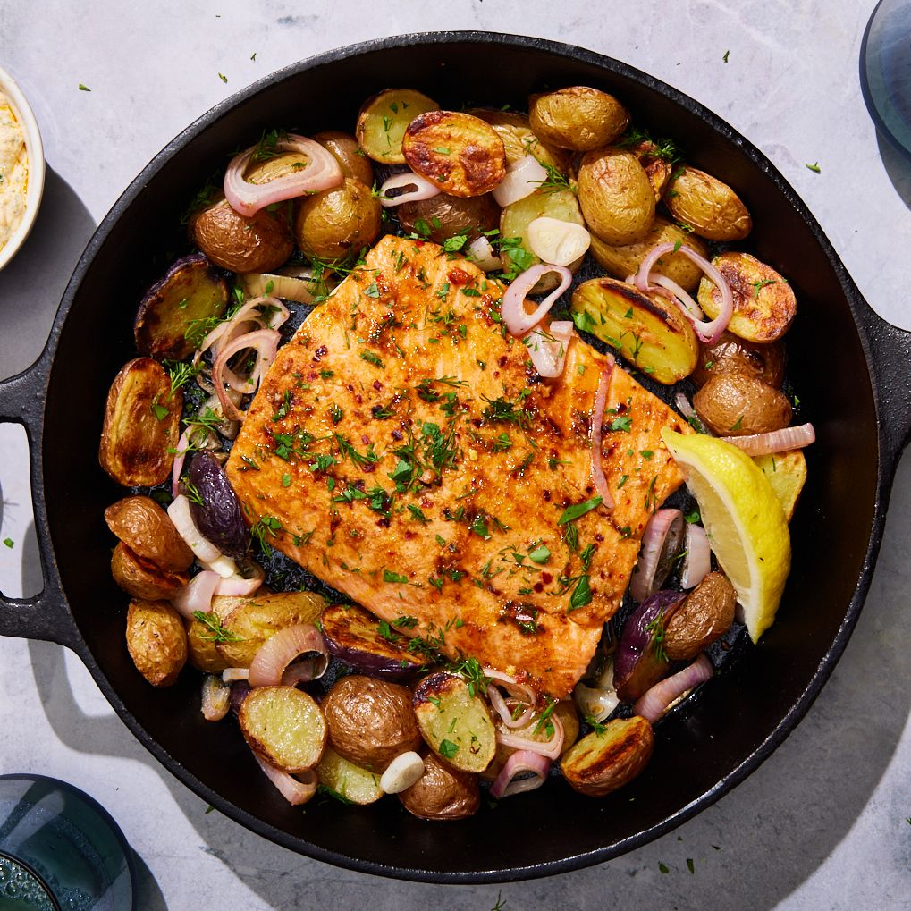

Salmon and Potato Skillet

Description
Easy, delicious, and filling, this salmon and potato skillet is the answer to your dinner needs, whether you’re searching for a date night star or a weeknight dinner savior.
Ingredients
- 2 cloves garlic, grated or finely chopped
- 1 tsp. crushed red pepper flakes
- 1 tsp. finely grated lemon zest
- 1 tsp. ground coriander
- 1 tsp. ground cumin
- 1/2 tsp. paprika
- 1/3 c. plus 1 tbsp. extra-virgin olive oil
- Kosher salt
- 1 (1-lb.) skin-on salmon fillet
- 1 1/2 lb. baby potatoes, halved
- Freshly ground black pepper
- 3/4 c. plain Greek yogurt
- 2 tbsp. chopped fresh dill, divided
- 2 tbsp. chopped fresh parsley, divided
- 2 small shallots, sliced into 1/4 rings
- Lemon wedges, for serving
Steps
- Arrange a rack in center of oven; preheat to 450°. Place a large cast-iron skillet on rack.
- In a small bowl, combine garlic, red pepper flakes, lemon zest, coriander, cumin, paprika, 1/3 cup oil, and 1/2 teaspoon salt. Generously season salmon on both sides with salt and place in a shallow container. Pour half of marinade over salmon; set aside.
- In a large bowl, toss potatoes with 2 teaspoons salt, a few grinds of black pepper, and remaining 1 tablespoon oil. Carefully remove skillet from oven. Arrange potatoes cut side down in skillet and roast 20 minutes.
- Meanwhile, in a small bowl, combine remaining marinade, yogurt, 1 tablespoon dill, 1 tablespoon parsley, and a pinch of salt; set aside.
- Remove skillet from oven. Using a spatula, pile potatoes to one side or create a space in the center of skillet. Arrange salmon skin side up next to potatoes. Scatter shallots around salmon. Roast 6 to 7 minutes, flip salmon, and continue to roast until salmon flesh easily flakes and skin is crisp, 2 to 3 minutes more.
- Top with remaining 1 tablespoon dill and 1 tablespoon parsley. Serve with lemon wedges and reserved yogurt sauce alongside.